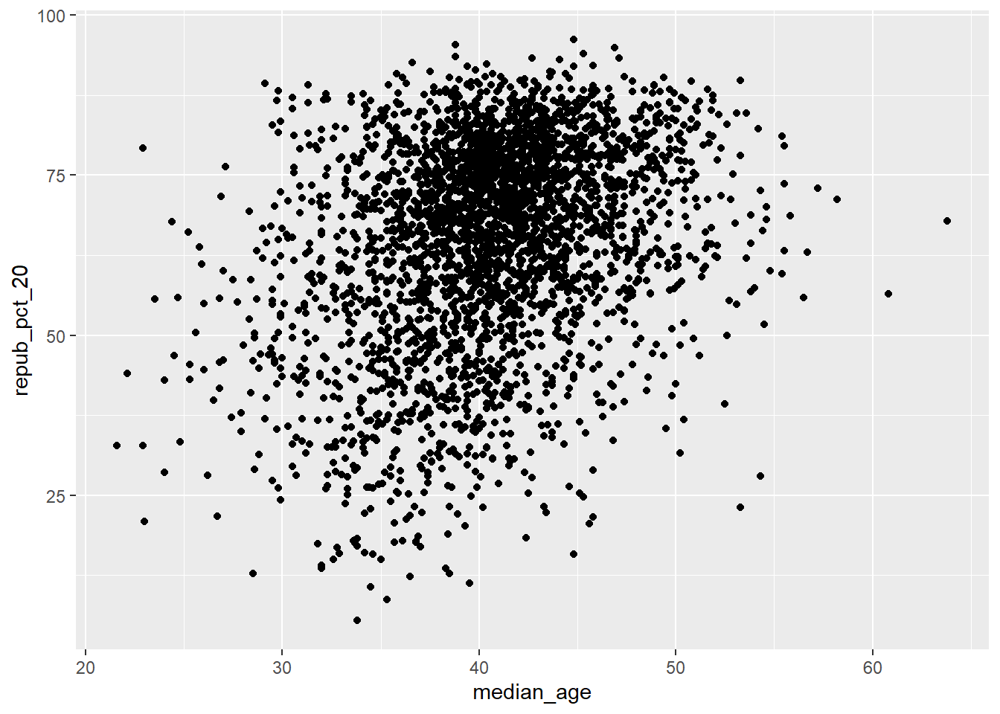
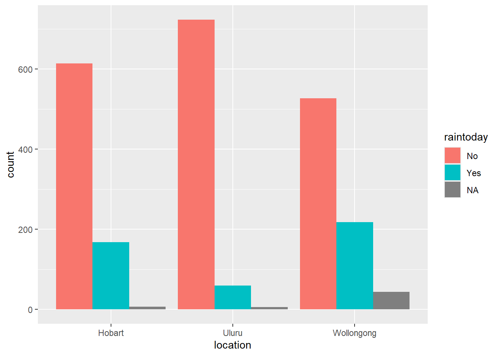

Use this file for practice with the bivariate viz in-class activity. Refer to the class website for details.
Review
# Import datasurvey<-read.csv("https://hash-mac.github.io/stat112site-s25/data/survey.csv")# How many students have now filled out the survey?nrow(survey)
[1] 49
# What type of variables do we have?str(survey)
'data.frame': 49 obs. of 4 variables:
$ cafe_mac : chr "mashed potatoes" "is tasty" "burger" "caesar salad" ...
$ minutes_to_campus: int 5 5 5 12 0 10 5 0 0 5 ...
$ fav_temp_c : num 26 28 19 18 24 -10 21 25 18 25 ...
$ hangout : chr "the mountains" "a city" "a forest" "a forest" ...
Example 1
# Attach a package needed to use the ggplot functionlibrary(tidyverse)
── Attaching core tidyverse packages ──────────────────────── tidyverse 2.0.0 ──
✔ dplyr 1.1.4 ✔ readr 2.1.5
✔ forcats 1.0.0 ✔ stringr 1.5.1
✔ ggplot2 3.5.1 ✔ tibble 3.2.1
✔ lubridate 1.9.4 ✔ tidyr 1.3.1
✔ purrr 1.0.2
── Conflicts ────────────────────────────────────────── tidyverse_conflicts() ──
✖ dplyr::filter() masks stats::filter()
✖ dplyr::lag() masks stats::lag()
ℹ Use the conflicted package (<http://conflicted.r-lib.org/>) to force all conflicts to become errors
# Make a ggplotggplot(survey,aes(x=hangout))+geom_bar()+labs(x="hangout place", y="# of responses")
# Set up the plotting frame# This plotting frame automatically labels the x and y axesggplot(elections, aes(y = repub_pct_20, x = repub_pct_16))
# Add a layer of points for each county# use geom_point() for a scatterplotggplot(elections, aes(y = repub_pct_20, x = repub_pct_16)) +geom_point()
# Change the shape of the points# each number represents a different shape (eg 2 is triangles, 3 is plus signs, 4 is x's, etc)ggplot(elections, aes(y = repub_pct_20, x = repub_pct_16)) +geom_point(shape =4)
# YOU TRY: Modify the code to make the points "orange"# NOTE: Try to anticipate if "color" or "fill" will be useful here. Then try both. # "color" changes the color of the shapes, but "fill" doesn't do anythingggplot(elections, aes(y = repub_pct_20, x = repub_pct_16)) +geom_point(color="orange")
# Add a layer that represents each county by the state it's in# Take note of the geom and the info it needs to run! [geom_text() fn]ggplot(elections, aes(y = repub_pct_20, x = repub_pct_16)) +geom_text(aes(label = state_abbr))
Exercise 3
strong relationship, positive (republican percentage didn’t change much between 2016 and 2020)
some outliers in TX, ID, UT w/ significantly higher GOP percentage in 2020 compared to 2016
Exercise 4
ggplot(elections, aes(y = repub_pct_20, x = repub_pct_16)) +geom_point() +geom_smooth()
`geom_smooth()` using method = 'gam' and formula = 'y ~ s(x, bs = "cs")'
# no pointsggplot(elections, aes(y = repub_pct_20, x = repub_pct_16)) +geom_smooth()
`geom_smooth()` using method = 'gam' and formula = 'y ~ s(x, bs = "cs")'
# linear modelggplot(elections, aes(y = repub_pct_20, x = repub_pct_16)) +geom_point() +geom_smooth(method="lm")
`geom_smooth()` using formula = 'y ~ x'
Exercise 5
# Scatterplot of repub_pct_20 vs median_rentggplot(elections, aes(x=median_rent, y=repub_pct_20))+geom_point()
# Scatterplot of repub_pct_20 vs median_ageggplot(elections, aes(x=median_age, y=repub_pct_20))+geom_point()

GOP percentage (2020) vs median_rent is a slightly weak, negative relationship
as median rent increases, GOP percentage increases, though there are some outliers w/ low median rent and low GOP %
GOP percentage (2020) vs median_age is not linear, but there is a cluster of high GOP % counties around 40 years
I think median_rent is a better predictor repub_pct_20
Exercise 6
scatterplots have to be between 2 quantitative variables (not 1 quantitative and 1 categorical) b/c the x and y axes are numbers
it doesn’t tell us the frequency or count of historically red counties that have a high % of republican votes in 2020
ggplot(elections, aes(y = repub_pct_20, x = historical)) +geom_point()
Summary: * the median GOP % of votes in counties that are historically red (75%) is higher than in counties that are historically purple (~65%) and much higher than historically blue counties (~55%) * there are lot more low outliers for red counties than blue or purple counties –> maybe b/c the median is higher, so more low outliers
Exercise 8
Exercise 9
# you can't see the right side of the density plots b/c they're blocked by another plot on top of it. also the colors don't exactly match the historical color, which is confusing to look atggplot(elections, aes(x=repub_pct_20, fill=historical))+geom_density()
# scale_fill_manual lets you manually pick specific colors for each density plot?ggplot(elections, aes(x = repub_pct_20, fill = historical)) +geom_density() +scale_fill_manual(values =c("blue", "purple", "red"))
# alpha = 0.5 makes the graphs transparent (you can see the ones below)# Play around with different values of alpha, between 0 and 1ggplot(elections, aes(x = repub_pct_20, fill = historical)) +geom_density(alpha =0.3) +scale_fill_manual(values =c("blue", "purple", "red"))
# facet_wrap seperates the density plots onto seperate charts (no longer overlapping on the same plot)ggplot(elections, aes(x = repub_pct_20, fill = historical)) +geom_density() +scale_fill_manual(values =c("blue", "purple", "red")) +facet_wrap(~ historical)
# Let's try a similar grouping strategy with a histogram instead of density plot.# too many overlapping bars; you cant see the count if a bar is in front of itggplot(elections, aes(x = repub_pct_20, fill = historical)) +geom_histogram(color ="white") +scale_fill_manual(values =c("blue", "purple", "red"))
`stat_bin()` using `bins = 30`. Pick better value with `binwidth`.
Exercise 10
Which do you like the best?
box plot
What is one pro of density plots relative to boxplots?
if there are a lot of outliers, the boxplots show a lot of dots, but the density plot would have a tail
box plots don’t how many observations there are, but a density plot does
What is one con of density plots relative to boxplots?
it’s harder to determine the median and 1st/3rd quartiles on a density plot (have to eyeball the median, but it’s more clear on a boxplot)
# A stacked bar plot# "x" sets the variable to the x-axis (historical), but "fill" seperates in the number of winners for each county (winner_20) # eg of the historically red counties, what number voted republican or democrat? --> stacked bar plotggplot(elections, aes(x = historical, fill = winner_20)) +geom_bar()
# A faceted bar plotggplot(elections, aes(x = winner_20)) +geom_bar() +facet_wrap(~ historical)
# A side-by-side bar plot# Note the new argument to geom_bar [position="dodge"]ggplot(elections, aes(x = historical, fill = winner_20)) +geom_bar(position ="dodge")
# A proportional bar plot# Note the new argument to geom_bar [position = "fill"]# relative frequency or proportions --> each bar adds up to 100%ggplot(elections, aes(x = historical, fill = winner_20)) +geom_bar(position ="fill")
pros of the “proportional bar chart:”
shows the proportion or percentage of observations for each variable (don’t have to calculate yourself, but in a stacked bar chart, you do)
con of the proportional bar chart:
can get messy or hard to read if there are multiple variables
also doesn’t work as well if you’re not dealing with proportions (eg just want counts)
i like the side-by-side bar chart because it’s fun to look at and see the breakdown of variables
# How do 3pm temperatures (temp3pm) differ by location?ggplot(weather, aes(x=location, y=temp3pm))+geom_boxplot()
Warning: Removed 19 rows containing non-finite outside the scale range
(`stat_boxplot()`).
# How might we predict the 3pm temperature (temp3pm) by the 9am temperature (temp9am)?ggplot(weather, aes(x=temp9am, y=temp3pm))+geom_point(shape=20)+geom_smooth(method="lm")
`geom_smooth()` using formula = 'y ~ x'
Warning: Removed 27 rows containing non-finite outside the scale range
(`stat_smooth()`).
Warning: Removed 27 rows containing missing values or values outside the scale range
(`geom_point()`).
# How do the number of rainy days (raintoday) differ by location?ggplot(weather, aes(x=location, fill=raintoday))+geom_bar(position="dodge")

Optional Exercise 1
# each state has its own density plot, and b/c there are 50 states + DC, there are 51 density plots on top of each other. Even if you make the graphs semi-transparent, it's nearly impossible to tell them apart# also, the key is overwhelmingly long and the colors are so similarggplot(elections, aes(x = repub_pct_20, fill = state_abbr)) +geom_density(alpha =0.5)
Warning: Groups with fewer than two data points have been dropped.
Warning in max(ids, na.rm = TRUE): no non-missing arguments to max; returning
-Inf
# facet wrap# too many charts and hard to compare from state to state when not on top of each otherggplot(elections, aes(x = repub_pct_20)) +geom_density(alpha =0.5) +facet_wrap(~ state_abbr)
Warning: Groups with fewer than two data points have been dropped.
no non-missing arguments to max; returning -Inf
# Install ggridges packagelibrary(ggridges)# Make our first joy plot# the density plots are so squished together and it's hard to track a state to it's respective graph b/c the y-axis is squishedggplot(elections, aes(x = repub_pct_20, y = state_abbr)) +geom_density_ridges()
Picking joint bandwidth of 4.43
# Let's put the states in order by Republican support, not alphabet# How do you think fct_reorder works? We'll learn about this later in the semester.# fct_reorder lets you manually reorder catagorical variable names so they're not in alphabetical orderggplot(elections, aes(x = repub_pct_20, y =fct_reorder(state_abbr, repub_pct_20))) +geom_density_ridges(alpha =0.5)
Picking joint bandwidth of 4.43
# YOUR TURN: color/fill the ridges according to a state's historical voting patterns # and add meaningful axis labelsggplot(elections, aes(x=repub_pct_20,y=fct_reorder(state_abbr, repub_pct_20), fill=historical))+geom_density_ridges(alpha=0.5)+scale_fill_manual(values =c("blue", "purple", "red"))+labs(x="% of GOP votes", y="State")
Picking joint bandwidth of 4.43
So states with the most variability county to county would have a flatter bar (larger std dev), but least variability have a taller graph (smaller std dev, more concentrated by the mean)???
HI, TN, WV have low variability
VA, MN have high variability
Some states have a high prop of counties w/ similar percentages of GOP voters, while others have more variation
Interesting that some historically red states have a lower GOP vote % than historically blue states (eg NM is lower than IL)
I think this could be due to states w/ high urban dem-voting pop but a lot of rural GOP-voting counties (eg Chicago vs rural IL counties)
How is % of GOP voters related to population density? Can urban vs rural explain the variation in GOP votes?
Source Code
---title: "Bivariate Viz"---Use this file for practice with the **bivariate viz** in-class activity. Refer to the class website for details.## Review {.unnumbered}```{r}# Import datasurvey<-read.csv("https://hash-mac.github.io/stat112site-s25/data/survey.csv")# How many students have now filled out the survey?nrow(survey)# What type of variables do we have?str(survey)```### Example 1 {.unnumbered}```{r}# Attach a package needed to use the ggplot functionlibrary(tidyverse)# Make a ggplotggplot(survey,aes(x=hangout))+geom_bar()+labs(x="hangout place", y="# of responses")```### Example 2 {.unnumbered}```{r}ggplot(survey, aes(x=fav_temp_c))+geom_histogram(binwidth=3,color="white")+labs(x="temperature (*C)")ggplot(survey, aes(x=fav_temp_c))+geom_density()```* typical response is around 20*C* data is unimodal, skewed left* range is -40*C to 65C* potentially low and high outliers## In-Class Exercises {.unnumbered}### Exercise 0: Review {.unnumbered}```{r}# Load dataelections <-read.csv("https://mac-stat.github.io/data/election_2020_county.csv")# Check it outhead(elections)``````{r}ggplot(elections,aes(x=winner_20))+geom_bar()```* over 2000 of the 3000 counties voted republican* how can we get the exact number of republican counties?* how has the winning party shifted over time (2012 vs 2016 vs 2020)?* the data includes race percentages in each county, so we could analyze majority race and winning party in elections```{r}ggplot(elections, aes(x=repub_pct_20))+geom_histogram(color="white", binwidth =3)```* Skewed left (more counties with a majority (or supermajority) republican voters)* which state has the most republican counties?### Exercise 1 {.unnumbered}```{r}ggplot(elections,aes(x=repub_pct_16,y=repub_pct_20))+geom_point()```### Exercise 2 {.unnumbered}```{r}# Set up the plotting frame# This plotting frame automatically labels the x and y axesggplot(elections, aes(y = repub_pct_20, x = repub_pct_16))# Add a layer of points for each county# use geom_point() for a scatterplotggplot(elections, aes(y = repub_pct_20, x = repub_pct_16)) +geom_point()# Change the shape of the points# each number represents a different shape (eg 2 is triangles, 3 is plus signs, 4 is x's, etc)ggplot(elections, aes(y = repub_pct_20, x = repub_pct_16)) +geom_point(shape =4)# YOU TRY: Modify the code to make the points "orange"# NOTE: Try to anticipate if "color" or "fill" will be useful here. Then try both. # "color" changes the color of the shapes, but "fill" doesn't do anythingggplot(elections, aes(y = repub_pct_20, x = repub_pct_16)) +geom_point(color="orange")# Add a layer that represents each county by the state it's in# Take note of the geom and the info it needs to run! [geom_text() fn]ggplot(elections, aes(y = repub_pct_20, x = repub_pct_16)) +geom_text(aes(label = state_abbr))```### Exercise 3 {.unnumbered}* strong relationship, positive (republican percentage didn't change much between 2016 and 2020)* some outliers in TX, ID, UT w/ significantly higher GOP percentage in 2020 compared to 2016### Exercise 4 {.unnumbered}```{r}ggplot(elections, aes(y = repub_pct_20, x = repub_pct_16)) +geom_point() +geom_smooth()# no pointsggplot(elections, aes(y = repub_pct_20, x = repub_pct_16)) +geom_smooth()# linear modelggplot(elections, aes(y = repub_pct_20, x = repub_pct_16)) +geom_point() +geom_smooth(method="lm")```### Exercise 5 {.unnumbered}```{r}# Scatterplot of repub_pct_20 vs median_rentggplot(elections, aes(x=median_rent, y=repub_pct_20))+geom_point()# Scatterplot of repub_pct_20 vs median_ageggplot(elections, aes(x=median_age, y=repub_pct_20))+geom_point()```* GOP percentage (2020) vs median_rent is a slightly weak, negative relationship * as median rent increases, GOP percentage increases, though there are some outliers w/ low median rent and low GOP %* GOP percentage (2020) vs median_age is not linear, but there is a cluster of high GOP % counties around 40 years* I think median_rent is a better predictor repub_pct_20### Exercise 6 {.unnumbered}* scatterplots have to be between 2 **quantitative** variables (not 1 quantitative and 1 categorical) b/c the x and y axes are numbers* it doesn't tell us the frequency or count of historically red counties that have a high % of republican votes in 2020```{r}ggplot(elections, aes(y = repub_pct_20, x = historical)) +geom_point()```### Exercise 7 {.unnumbered}```{r}# Side-by-side violin plotsggplot(elections, aes(y = repub_pct_20, x = historical)) +geom_violin()# Side-by-side boxplots (defined below)ggplot(elections, aes(y = repub_pct_20, x = historical)) +geom_boxplot()```**Summary:*** the median GOP % of votes in counties that are historically red (75%) is higher than in counties that are historically purple (~65%) and much higher than historically blue counties (~55%)* there are lot more low outliers for red counties than blue or purple counties --> maybe b/c the median is higher, so more low outliers### Exercise 8 {.unnumbered}### Exercise 9 {.unnumbered}```{r}# you can't see the right side of the density plots b/c they're blocked by another plot on top of it. also the colors don't exactly match the historical color, which is confusing to look atggplot(elections, aes(x=repub_pct_20, fill=historical))+geom_density()# scale_fill_manual lets you manually pick specific colors for each density plot?ggplot(elections, aes(x = repub_pct_20, fill = historical)) +geom_density() +scale_fill_manual(values =c("blue", "purple", "red"))# alpha = 0.5 makes the graphs transparent (you can see the ones below)# Play around with different values of alpha, between 0 and 1ggplot(elections, aes(x = repub_pct_20, fill = historical)) +geom_density(alpha =0.3) +scale_fill_manual(values =c("blue", "purple", "red"))# facet_wrap seperates the density plots onto seperate charts (no longer overlapping on the same plot)ggplot(elections, aes(x = repub_pct_20, fill = historical)) +geom_density() +scale_fill_manual(values =c("blue", "purple", "red")) +facet_wrap(~ historical)# Let's try a similar grouping strategy with a histogram instead of density plot.# too many overlapping bars; you cant see the count if a bar is in front of itggplot(elections, aes(x = repub_pct_20, fill = historical)) +geom_histogram(color ="white") +scale_fill_manual(values =c("blue", "purple", "red"))```### Exercise 10 {.unnumbered}* Which do you like the best? * box plot* What is one pro of density plots relative to boxplots? * if there are a lot of outliers, the boxplots show a lot of dots, but the density plot would have a tail * box plots don't how many observations there are, but a density plot does* What is one con of density plots relative to boxplots? * it's harder to determine the median and 1st/3rd quartiles on a density plot (have to eyeball the median, but it's more clear on a boxplot) ### Example 11 {.unnumbered}```{r}ggplot(elections, aes(x=historical, fill=winner_20))+geom_bar()ggplot(elections, aes(x=winner_20,fill=historical))+geom_bar()+scale_fill_manual(values=c("grey","grey","grey"))+facet_wrap(~historical)```### Exercise 12 {.unnumbered}```{r}# A stacked bar plot# "x" sets the variable to the x-axis (historical), but "fill" seperates in the number of winners for each county (winner_20) # eg of the historically red counties, what number voted republican or democrat? --> stacked bar plotggplot(elections, aes(x = historical, fill = winner_20)) +geom_bar()# A faceted bar plotggplot(elections, aes(x = winner_20)) +geom_bar() +facet_wrap(~ historical)# A side-by-side bar plot# Note the new argument to geom_bar [position="dodge"]ggplot(elections, aes(x = historical, fill = winner_20)) +geom_bar(position ="dodge")# A proportional bar plot# Note the new argument to geom_bar [position = "fill"]# relative frequency or proportions --> each bar adds up to 100%ggplot(elections, aes(x = historical, fill = winner_20)) +geom_bar(position ="fill")```* pros of the "proportional bar chart:" * shows the proportion or percentage of observations for each variable (don't have to calculate yourself, but in a stacked bar chart, you do)* con of the proportional bar chart: * can get messy or hard to read if there are multiple variables * also doesn't work as well if you're not dealing with proportions (eg just want counts)* i like the side-by-side bar chart because it's fun to look at and see the breakdown of variables### Exercise 13 {.unnumbered}```{r}weather <-read.csv("https://mac-stat.github.io/data/weather_3_locations.csv")names(weather)# How do 3pm temperatures (temp3pm) differ by location?ggplot(weather, aes(x=location, y=temp3pm))+geom_boxplot()# How might we predict the 3pm temperature (temp3pm) by the 9am temperature (temp9am)?ggplot(weather, aes(x=temp9am, y=temp3pm))+geom_point(shape=20)+geom_smooth(method="lm")# How do the number of rainy days (raintoday) differ by location?ggplot(weather, aes(x=location, fill=raintoday))+geom_bar(position="dodge")```### Optional Exercise 1 {.unnumbered}```{r}# each state has its own density plot, and b/c there are 50 states + DC, there are 51 density plots on top of each other. Even if you make the graphs semi-transparent, it's nearly impossible to tell them apart# also, the key is overwhelmingly long and the colors are so similarggplot(elections, aes(x = repub_pct_20, fill = state_abbr)) +geom_density(alpha =0.5)# facet wrap# too many charts and hard to compare from state to state when not on top of each otherggplot(elections, aes(x = repub_pct_20)) +geom_density(alpha =0.5) +facet_wrap(~ state_abbr)``````{r}# Install ggridges packagelibrary(ggridges)# Make our first joy plot# the density plots are so squished together and it's hard to track a state to it's respective graph b/c the y-axis is squishedggplot(elections, aes(x = repub_pct_20, y = state_abbr)) +geom_density_ridges()# Let's put the states in order by Republican support, not alphabet# How do you think fct_reorder works? We'll learn about this later in the semester.# fct_reorder lets you manually reorder catagorical variable names so they're not in alphabetical orderggplot(elections, aes(x = repub_pct_20, y =fct_reorder(state_abbr, repub_pct_20))) +geom_density_ridges(alpha =0.5)# YOUR TURN: color/fill the ridges according to a state's historical voting patterns # and add meaningful axis labelsggplot(elections, aes(x=repub_pct_20,y=fct_reorder(state_abbr, repub_pct_20), fill=historical))+geom_density_ridges(alpha=0.5)+scale_fill_manual(values =c("blue", "purple", "red"))+labs(x="% of GOP votes", y="State")```* So states with the most variability county to county would have a flatter bar (larger std dev), but least variability have a taller graph (smaller std dev, more concentrated by the mean)??? * HI, TN, WV have low variability * VA, MN have high variability* Some states have a high prop of counties w/ similar percentages of GOP voters, while others have more variation* Interesting that some historically red states have a lower GOP vote % than historically blue states (eg NM is lower than IL) * I think this could be due to states w/ high urban dem-voting pop but a lot of rural GOP-voting counties (eg Chicago vs rural IL counties) * How is % of GOP voters related to population density? Can urban vs rural explain the variation in GOP votes?